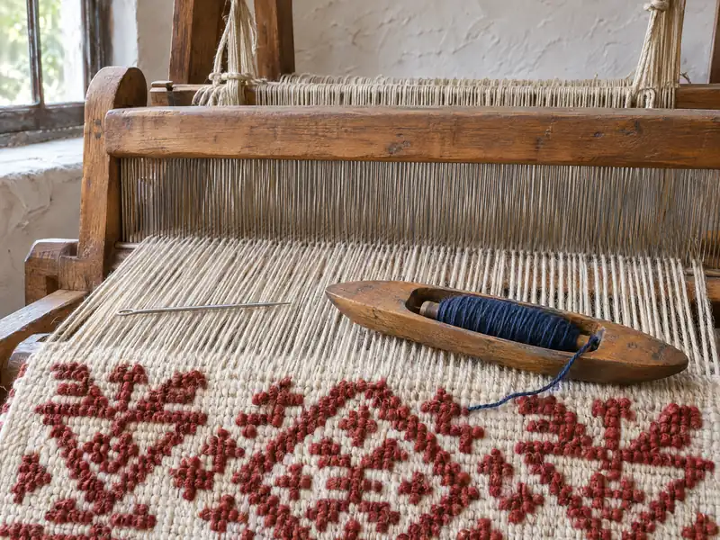

Si tesse dopo il tuo ordine.
Tappeti, cuscini e coperte di lana, fatti al telaio con la tecnica a pibiones. Scegli il pezzo, e prima di pagare sai quante settimane di telaio servono.
Scegli il pezzoChe cosa sono i pibiones
I grani in rilievo che vedi sulla lana si chiamano pibiones, acini. La tessitrice avvolge il filo della trama attorno a un ferro sottile posato sull’ordito; quando il ferro si sfila, il filo resta sollevato e forma il grano. Un disegno si fa così, grano dopo grano.
Tutti alla stessa scala
Una foto non dice quanto è grande un tappeto. Qui ogni pezzo è disegnato con la sua misura vera, accanto agli altri. Tocca un pezzo per aprirlo.
I pezzi
Lana sarda, o lino per le tovagliette. Spedizione 12 €, gratis da 200 €.